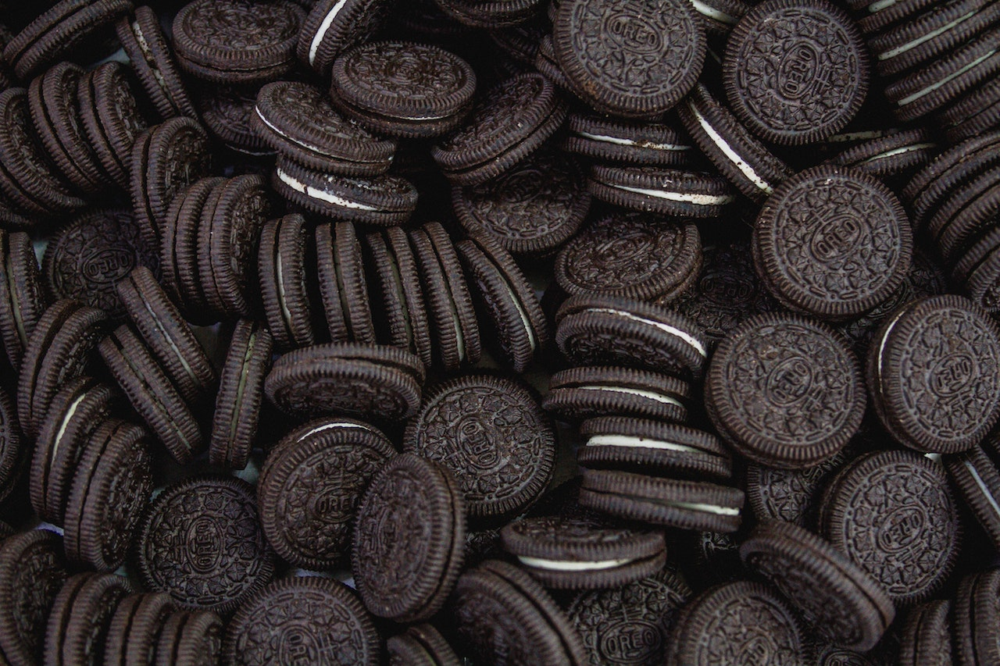
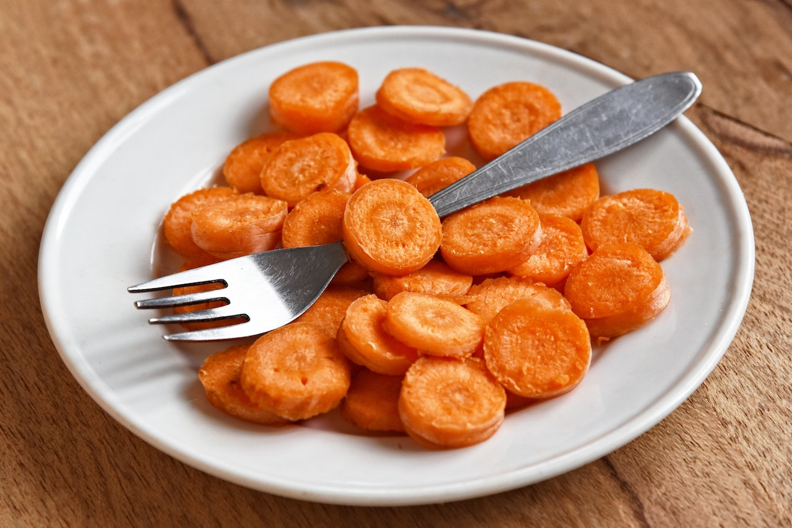
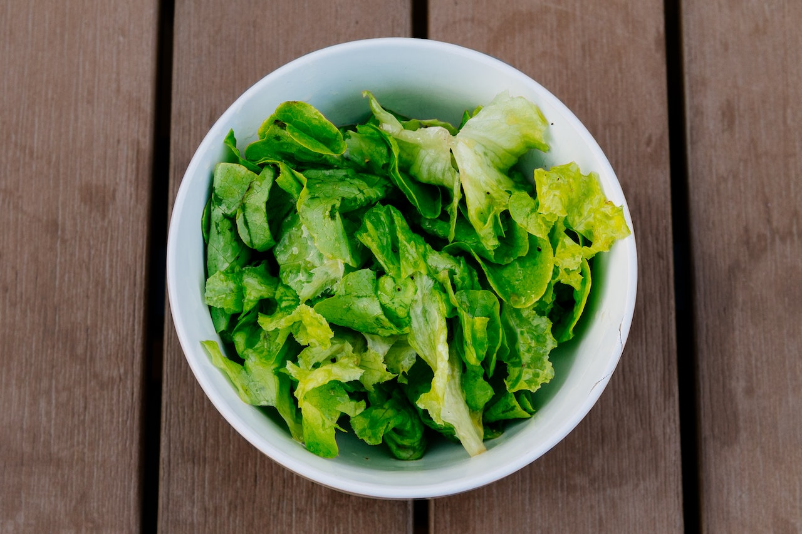

- Frutas
- Manzanas
 es una imagen de una manzana roja
es una imagen de una manzana roja
- Bananas
 es una imagen de una banana
es una imagen de una banana
- Fresas
 es una imagen de un plato lleno de fresas
es una imagen de un plato lleno de fresas
- Chatarra
- Papas fritas
 es una imagen de papas fritas servidas en un plato
es una imagen de papas fritas servidas en un plato
- Oreo

es una imagen de galletas oreo
- Verduras
- Zanahoria

es una imagen de zanahorias rebanas servidas en un plato
- Lechuga

es una imagen de lechuga servida en un plato